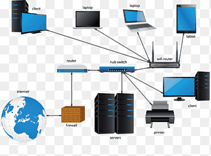
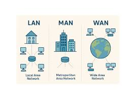
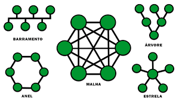

O que é uma Rede de Computadores?
Uma rede de computadores é a conexão entre dois ou mais dispositivos com o objetivo de compartilhar informações, recursos e serviços de forma eficiente.
Esses dispositivos incluem computadores, celulares, servidores, impressoras e roteadores, podendo estar conectados por cabos físicos (como cabo de par trançado e fibra óptica) ou por redes sem fio (Wi-Fi, Bluetooth).
As redes são fundamentais no mundo moderno: elas permitem o acesso à internet, o envio de e-mails, a transferência de arquivos e o funcionamento de serviços como streaming e videoconferências.

Tipos de Rede
As redes são classificadas de acordo com sua área de abrangência geográfica. Os três principais tipos são:
LAN — Local Area Network (Rede Local)
Rede de curto alcance utilizada em ambientes pequenos como residências, escolas e escritórios. Possui alta velocidade de transmissão e baixo custo de implementação.
Exemplo: rede Wi-Fi de uma casa ou laboratório de informática.
MAN — Metropolitan Area Network (Rede Metropolitana)
Rede que cobre áreas urbanas como bairros ou cidades inteiras. Geralmente administrada por provedores de internet ou órgãos públicos.
Exemplo: rede de câmeras de segurança de uma prefeitura.
WAN — Wide Area Network (Rede de Longa Distância)
Rede de longa distância que pode conectar países e continentes. A maior WAN existente é a própria Internet.
Exemplo: conexão entre filiais de uma empresa em países diferentes.
| Tipo | Alcance | Velocidade | Exemplo |
|---|---|---|---|
| LAN | Até 1 km | Alta (até 10 Gbps) | Rede de casa / escola |
| MAN | Até 50 km | Média | Rede de uma cidade |
| WAN | Global | Variável | Internet |

Topologias de Rede
A topologia de rede define a forma como os dispositivos estão organizados e interconectados. Existem quatro topologias principais:
- Estrela: todos os dispositivos se conectam a um ponto central (switch ou hub). É a mais usada em redes domésticas e corporativas.
- Barramento: todos os dispositivos compartilham um único cabo principal. Simples, porém obsoleta — uma falha no cabo derruba a rede inteira.
- Anel: os dispositivos formam um circuito fechado. Os dados trafegam em uma única direção até chegar ao destino.
- Malha: cada dispositivo se conecta a vários outros, criando múltiplos caminhos. Alta confiabilidade — usada em redes críticas.

Como uma Rede Funciona?
A comunicação em rede segue um conjunto de regras chamado protocolo. O principal protocolo da internet é o TCP/IP, que divide os dados em pequenos pacotes e os envia pelo caminho mais eficiente até o destino.
O processo de envio de dados em rede ocorre nas seguintes etapas:
- O dispositivo de origem divide os dados em pacotes menores.
- Cada pacote recebe o endereço IP de destino.
- O roteador decide o melhor caminho para cada pacote.
- Os pacotes chegam ao destino e são remontados na ordem correta.
- O dispositivo de destino confirma o recebimento ao remetente.
O que é um endereço IP?
O IP (Internet Protocol) é o identificador único de cada dispositivo em uma rede — funciona como o "endereço residencial" do computador. Exemplo de IPv4: 192.168.0.1.
Avaliação
Responda todas as questões abaixo para testar o que você aprendeu: